The economist’s data analysis skillset.
Three figures, each matched to a set of variables
| Part | Variables | Figure | Later becomes… |
|---|---|---|---|
| 2.1 | Numerical by Numerical | Scatterplot | Regression (Part 4) |
| 2.2 | Numerical by Categorical | Boxplot (+ stripplot) | Two-sample test (Part 3) |
| 2.3 | Numerical by Numerical by Categorical | Scatter colored by category | Regression with a control (Part 5) |
Before we draw, we prepare: filter rows that don’t belong, log skewed variables, merge data from different sources.
What are the variable types, and what figure would you draw?
A dataset on commute distance and monthly gas spending for 30 workers.
| Commute_Miles | Gas_Spend |
|---|---|
| 2.2 | 53 |
| 37.4 | 211 |
| 31.8 | 180 |
| 14.7 | 99 |
| 28.1 | 156 |
Variable Types: Numerical by Numerical
What are the variable types, and what figure would you draw?
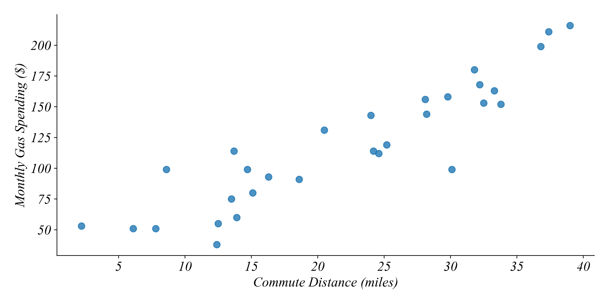
A Scatterplot shows how one numerical variable moves with another.
What are the variable types, and what figure would you draw?
A dataset on monthly rent for 75 apartments.
| Area | Rent |
|---|---|
| Urban | 2130 |
| Rural | 1060 |
| Urban | 1720 |
| Rural | 860 |
| Rural | 950 |
Variable Types: Numerical by Categorical
What are the variable types, and what figure would you draw?
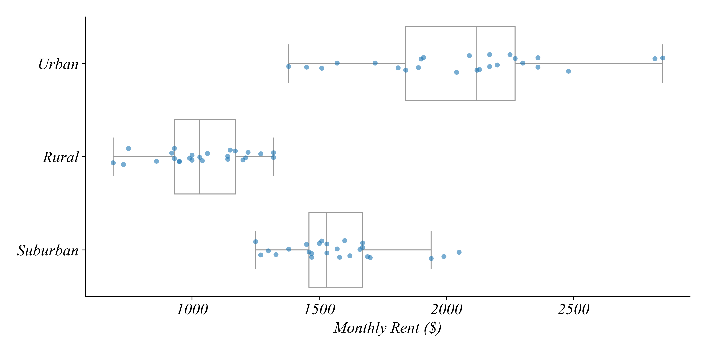
A Boxplot by category compares the distribution across groups. The stripplot shows each apartment.
What are the variable types, and what figure would you draw?
A dataset on weekly study hours and exam scores for students in two course formats.
| Format | Study_Hours | Exam_Score |
|---|---|---|
| Online | 3.5 | 65 |
| Online | 13.4 | 83 |
| Online | 0.8 | 51 |
| In-Person | 0.9 | 65 |
| In-Person | 1.3 | 70 |
Variable Types: Numerical by Numerical by Categorical
What are the variable types, and what figure would you draw?
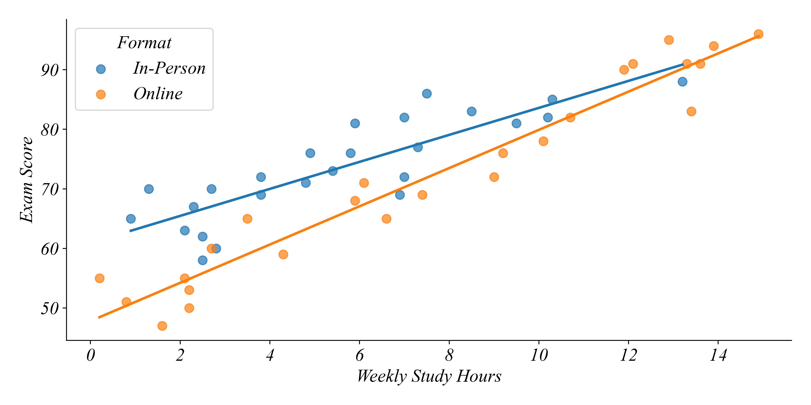
A Scatter colored by category shows whether the relationship differs between groups.
What are the variable types, and what figure would you draw?
US unemployment and inflation rates each year since 2015.
| year | unemployment | inflation |
|---|---|---|
| 2015 | 5.3 | 0.1 |
| 2016 | 4.9 | 1.3 |
| 2017 | 4.4 | 2.1 |
| 2018 | 3.9 | 2.4 |
| 2019 | 3.7 | 1.8 |
Variable Types: Numerical by Numerical, measured over time
What are the variable types, and what figure would you draw?
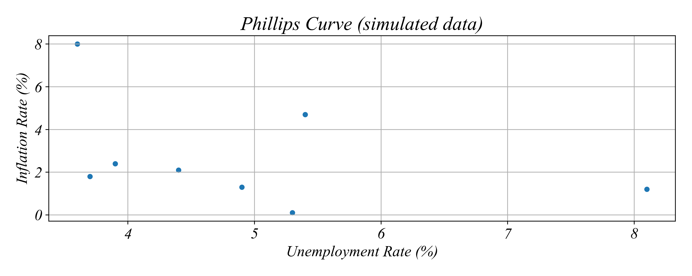
A Scatterplot works for timeseries too, like coffee and oil prices in Part 2.1. Labeling the points with years keeps the time order.
Each figure shows the data accurately. Does it answer the question?
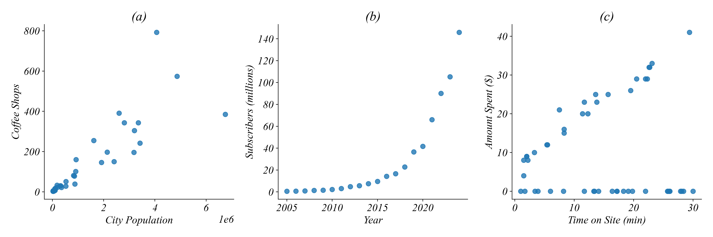
What does each figure show well, and what does it make hard to see?
Log both axes, log one axis, or filter
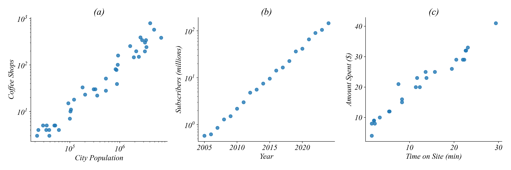
Equal distances on a log scale mean equal multiples
multiplied by 10
2 × 2 × 2 = 8
Two units apart on log10: 10 × 10 = 100 times larger
On the income axis in Part 2.3, what does equal spacing mean?
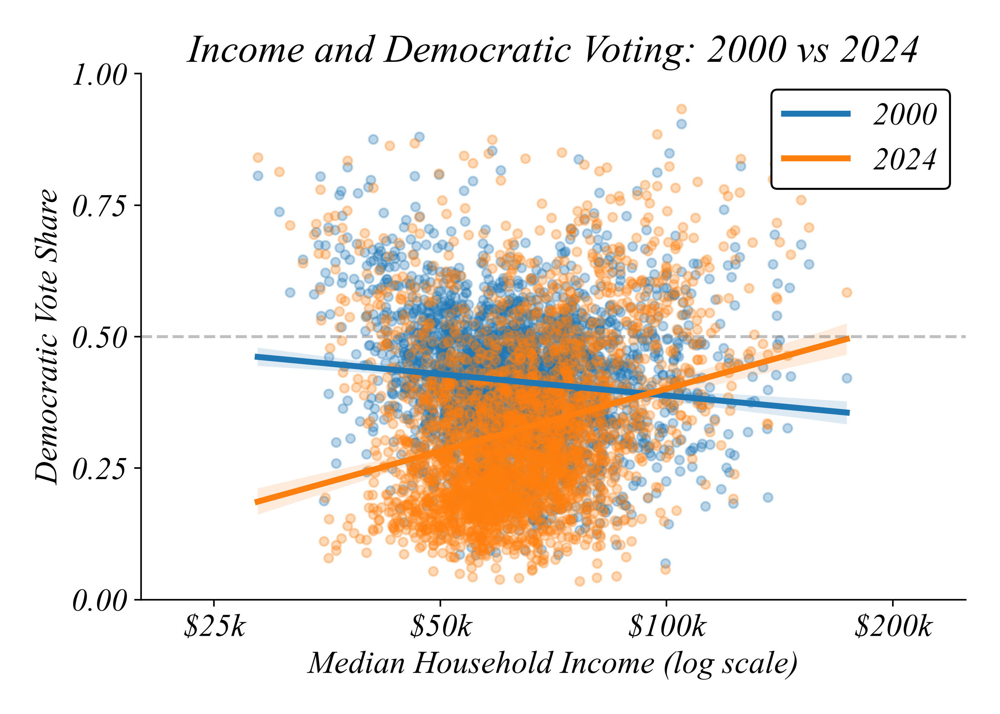
$25k → $50k → $100k → $200k: each step to the right is a doubling of income.
Why not just log every skewed variable?
In Part 2.2, most Starbucks rows had zero revenue.
A coffee app records every session, whether or not the customer buys.
| Session | Event | Minutes | Amount |
|---|---|---|---|
| S01 | Purchased | 4 | 6 |
| S02 | Browsed | 2 | 0 |
| S03 | Purchased | 9 | 11 |
| S04 | Browsed | 7 | 0 |
| S05 | Purchased | 15 | 17 |
| S06 | Browsed | 12 | 0 |
| S07 | Purchased | 6 | 8 |
| S08 | Browsed | 3 | 0 |
| S09 | Purchased | 12 | 14 |
| S10 | Browsed | 10 | 0 |
| S11 | Purchased | 18 | 21 |
| S12 | Browsed | 5 | 0 |
Sketch a scatter of Minutes vs Amount using all the data.
Which rows should we drop to ask “do longer sessions lead to bigger orders?”
Sketch the scatter again after filtering.
All sessions vs. purchases only
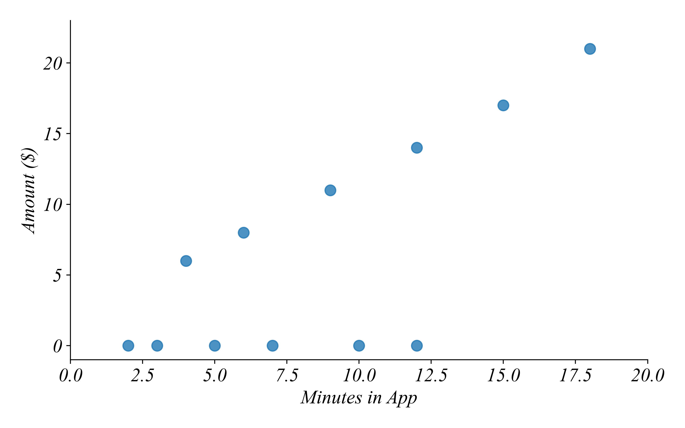
All rows: half the points sit at zero and hide the pattern.
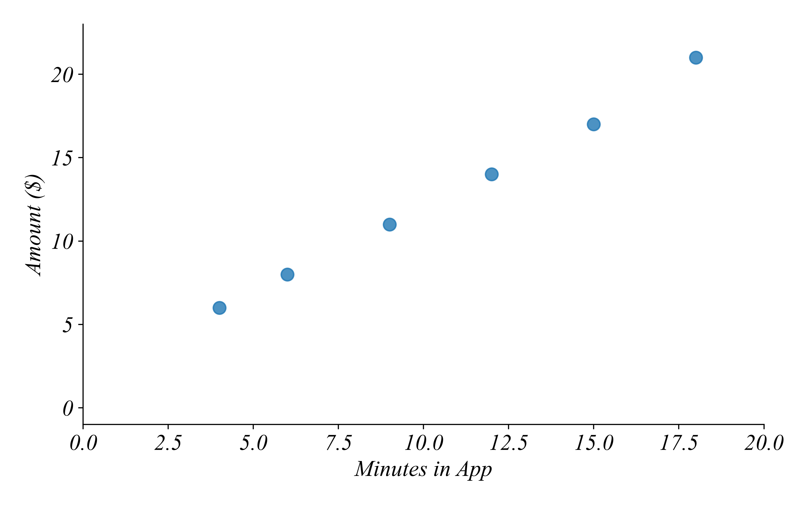
Filter Event == 'Purchased': longer sessions, bigger orders.
Which apartments remain after filtering?
| Apt | Area | Rent | Bedrooms |
|---|---|---|---|
| A1 | Urban | 1850 | 1 |
| A2 | Rural | 900 | 3 |
| A3 | Suburban | 1400 | 2 |
| A4 | Urban | 1450 | 1 |
| A5 | Suburban | 1650 | 3 |
| A6 | Rural | 1200 | 2 |
Filter: ((Area == 'Urban') OR (Area == 'Suburban')) AND (Rent < 1500)
Answer: A3, A4
Construct the boolean logic from the pieces
Goal: Find all apartments that are Rural, OR that have at least 2 bedrooms AND rent under $1,500.
Answer: 1 OR (2 AND 3)
Using the table from Practice 1: A2, A3, A6
The Part 2.2 pipeline, by hand
| Txn | Offer | Event | Amount |
|---|---|---|---|
| T01 | BOGO 5 | Purchase | 12 |
| T02 | BOGO 10 | Viewed | 0 |
| T03 | BOGO 5 | Purchase | 20 |
| T04 | Discount | Purchase | 8 |
| T05 | BOGO 10 | Purchase | 30 |
| T06 | BOGO 5 | Viewed | 0 |
| T07 | Discount | Purchase | 16 |
| T08 | BOGO 10 | Purchase | 18 |
Operations: 1) Filter for Event == 'Purchase' 2) Group by Offer 3) Calculate the mean and count of Amount
The Part 2.2 pipeline, by hand
| Offer | Mean Amount | Count |
|---|---|---|
| BOGO 5 | 16 | 2 |
| BOGO 10 | 24 | 2 |
| Discount | 12 | 2 |
What if we forgot the filter? BOGO 5 becomes (12 + 20 + 0) / 3 = 10.67, and BOGO 10 becomes (0 + 30 + 18) / 3 = 16.
The viewed rows aren’t purchases. Leaving them in drags every mean toward zero.
Hourly wage and experience for union and non-union workers
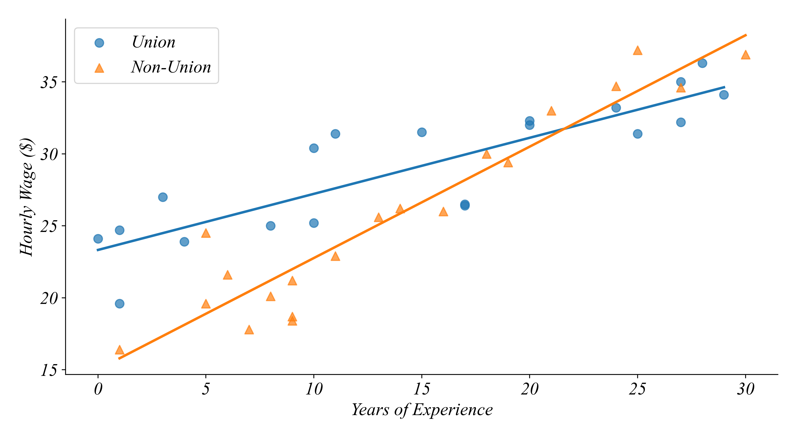
As experience increases, wages for each group: increase, decrease, or no pattern?
At 5 years of experience, which group earns more? At 28 years?
How does the relationship differ between the two groups?
Hourly wage and experience for union and non-union workers
Both increase. b) Union at 5 years; non-union at 28 years.
Union workers start higher, but non-union wages rise faster with experience (a steeper line).
Each point is one day at one coffee shop
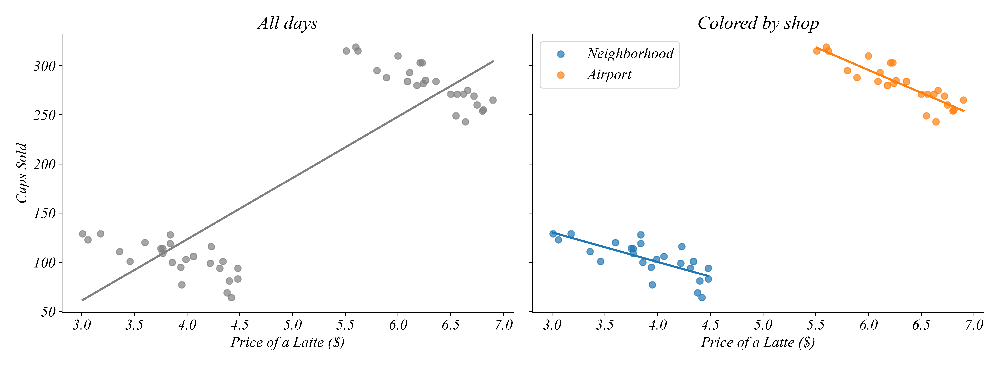
All days together: higher prices, more cups sold. Is demand upward sloping?
Within each shop, higher prices sell fewer cups. The airport just has higher prices and more customers.
The same lesson from Part 2.3
pd.merge(population, rents, on='City')
population
| City | Population |
|---|---|
| Alder | 120,000 |
| Birch | 850,000 |
| Cedar | 2,400,000 |
| Dogwood | 45,000 |
rents
| City | Rent_2019 | Rent_2024 |
|---|---|---|
| Alder | 950 | 1150 |
| Birch | 1300 | 1600 |
| Cedar | 2000 | 2300 |
| Elm | 800 | 980 |
How many rows in the merged data? Which cities drop out?
3 rows. Dogwood and Elm drop out: each appears in only one table.
Wide to long, so year can become a category
Wide
| City | Rent_2019 | Rent_2024 |
|---|---|---|
| Alder | 950 | 1150 |
| Birch | 1300 | 1600 |
| Cedar | 2000 | 2300 |
Long
| City | Year | Rent |
|---|---|---|
| Alder | 2019 | 950 |
| Birch | 2019 | 1300 |
| Cedar | 2019 | 2000 |
| Alder | 2024 | 1150 |
| Birch | 2024 | 1600 |
| Cedar | 2024 | 2300 |
3 rows become 6. Now Year is a column we can put on an axis or use for color.
Do bigger cities have higher rents, and has that changed since 2019?
Using the Part 2.3 template, which figure answers each question?
Data steps: merge population and rents on City, melt the rent years, log population.